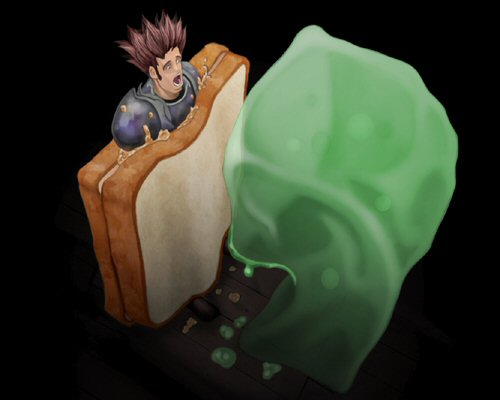

Hello and welcome to the August edition of the Postbag! This month we hear more from the King Black Dragon about the 'Kin', a belligerent Fremennik replies to a belligerent adventurer, and there's something involving peanut butter and jelly.
i have noticed that you all share different poses and different character features of every aspect of the game. but, do any of you know any of the others standing right next to you. do you even get to play the game?
i have noticed you there greeting me everytime that i get on the masterfully created main page and i have not given much thought to your being there.
one more question. do you all consider yourself to be guardians or protectors to the doorway to runescape and all its unique features?
sincerely,
wakka202, a faithful member of runescape
Well, that’s the last time we allow anyone to take sketches at the RuneScape Hokey Cokey championships.
There were 12 of us originally, but the gnome ran off when the zombie got disqualified for failing to take her left leg back out again…
Take care,
Carlos (The chef).
Why cant you use bread as a special attack against jellies? I know that I'am quite partial to peanut butter and jelly sandwiches.
Your fraternally, Doug Latrine
Dear Doug,
I heard once of an adventurer that tried to use bread to attack a jelly… just look what happened!
Yours slayingly,
Chaeldar

Dear postie pete, I was doing a quest yesterday, namely A Tail of Two Cats, and as i was speaking to reldo, i saw you........and what i saw was exactally the opposite of what i was thinking, i was thinking you were a little man, with a big postbag, running aroudn everywhere, and mabey carrying a sheild for protection. To my amazment, what i saw was......a skull with a beret on, carrying, in it's mouth a little postbag not much bigger then your head. now my question to you is, IS THAT REALLY YOU!!!or is it just an imposter. but anyway, i'm really impressed you know so much about dwarves, i can't beleive they stayed down their for 1,000 years during the "age of the kings" or something like that, i have a short intension span..........but yea, so i'll be on the look out for you again, and say hi to reldo next time you stop by his library, and can you ask him if he has a book on how the wild was created? cause i'm a zamorak and guthix fan myself, and i always wondered about that, thanks
Yours turely,
(T)/\st/\rOmeO
mastaromeo
Hi Masteromeo,
Never, ever make a bet with a Witch. If you do, for Guthix's sake, make sure you never, ever try to dodge the consequences of that bet. Look at me, I did! Still, it’s worked out in several ways, though I doubt I’ll ever get a girlfriend - unless she’s short sighted or a zombie. Sniff.
Regarding the Dwarvern culture, they are a fascinating race and that library of theirs contains some really interesting tomes; if you know where to look, of course. I’m told that the higher members of the mining consortiums have special access to the more interesting areas of the library, so keep yourself available for any further requests they might make of you. You’ll soon find yourself wading through more history than you can throw a Chompy at.
The wilderness is a barren land, scarred with the wounds from the great god wars in ages gone past. Legend states that great castles and settlements once flourished here, but it was to be the site of the greatest battle these lands have ever seen. Scholars predict that one day those who championed the war will return to finish what they started. Let’s just hope they never do.
Postie Pete
I was wondering where Rocnars come from? Do you enjoy living in cages inside player owned houses? Do you want to take over runescape? Are you an indangered species? What's your fave movie? What are movies?
I hope you can answer these questions, if all the Rocnars of runescape can put their inteligence together i'm sure you can answer these questions.
From thedna333

Once there many, many rocnar. On high, rocky mountains, on cold plains, herds of rocnar roam and trample over all. Sometimes we find camps of humans or goblins or trolls and we trample over them: bash smash crash! Just like in picture you send. But humans not like this, they hunt rocnar and kill them or lock them in cages. Wild herds of rocnar are no more.
Now we only live in dark damp cages, listen to humans walk about on floor above our heads. Sometimes floor open and tasty human fall into cage, then we can bash smash crash!
Not know what movies are. Do they fall from hole in floor above? Are they tasty and squishable?
ROCNAR!
Please could you forward this letter to the King Black Dragon. I understand the Red Dragon Isle is a dangerous place for you to go, but I would appreciate your help, as the letter is of extreme importance. Thankyou, Imp Hewer.
To the King Black Dragon, Most wonderful of the creatures of RuneScape,
Several months back, in Issue 5 of Postbag from the Hedge, I believe, you mentioned something about your ‘master’ and ‘the Kin’. I was wondering if you could, by any chance inform me of what these anomalies are. I have worked hard over these past years, searching the Varrock library, reading books in the Wise Old Man’s house, to piece together the clues to the mysteries of RuneScape. I believe your information may be the key.
I understand that my weakling sword is nothing compared to your supreme fury, and to you I may seem like nought but a snivelling Imp, but surely you could spare me only these most insignificant and unimportant pieces of information. Even a clue or a riddle would suffice, but I deeply desire to gain these details. I would do anything you wished, attempt any challenge you set, and confront any obstacle you place before me just to gain your aid.
Please help me, supreme King of the Dragons.
I am your humble servant. Imp Hewer.
Imp Hewer, Time will answer your questions. The Kin wait for those to open the door to power once again. Power not meant for your world nor mine, power best left. They are the shadow at the end of the corridor, the fly that blocks the candle, the seal that holds the lid and the child who shivers under the cold blanket of fear. They are not the answer, but are always the price that comes from asking the question. Why is it, do you think, that the records have been burnt away or hidden from prying eyes? A world made of adversity and beings bold enough to take the challenge of life is no place for secrets. Nothing can remain hidden forever; they are looking once more and, when it is found, the real masters of stability will reclaim the scales of Gielinor.
Every balance needs a counterbalance…. Lest he forget.
Your favorite chompy catcher –Clukclukcluk
Ello yous ‘uman,
Yous use dem long scribblies an Rantz get achey hed, but me’s cleverer dan dem shamans so yous get reply.
Yous silly ‘uman! Fatsie toadies is only for chompie yums, not ogre yums! We's no eat no toadies, dem for small greenies like dem Hayzelmeer. Him weirdy but him unnerstand Rantz, him say it echoey in head. Him funny. How he be in Rantz head? Him not dat small. Anywaysies, Bugs and Fycie be all smiley and jokesey so we no move. Dem ‘umans too needy an with dem questions, always dem the same asks. Silly ‘umans – you is eating dem toady bestest yums! All ogres knowing snails is making baby toadies happy toadies!
Now, yous ask about dem smelly nasty trollies. Dey always be asking for dem fishies back an make dem worstest names. Rantz be seeing trolls called “GP” and “Fat Toad”, what that about? No, me no rule dem. Dey stupid.
If yous is wanting boat den yous is helping with getting Rantz over to dem glug glugs island!
Ogres is making dis place home for lots of shiny moons. Is Jiggig and dem fatsies is not living anywheres yous know. Dem land to da south is full of weird birdies an weirdly thingsies dat ogres not catch – dem too slippery and dem stupid – dey not like fatsy toadies or chompies, so we is building big sticksie wall.
Why is yous got jubbly name? Is yous troll, too?
Yous Sinerrly,
Rantz
Why do you hate all outlanders? You are mean. And by the way, I bought Zamoraks Teddy Bear, but i got rid of it. It tried to attack me. You wouldnt want one of those. And I have the left handed chisel. All regular chisels are left handed. And Saradomin's wig belongs to Veleornia. She's actually a boy who is bald. She went to the makeover mage, and he forgot to give her hair. Oh and one more thing, Im level 57 and im soooo much stronger than you. I only need to kill Koschei the Deathless and then Ill have seven votes and Brundt will let me in. hahahahah u are a noob.
Hope you have a bad life,
aragornjack1
Humpf!
Hello Thorlor.
I see you managed to somehow convince the others of your worthiness. Fools. I notice, however, that you didn’t even get anywhere near the cheese from the moon, or the dodo egg. Amateur! Any level 1 Fremennik worth his boots would be able to find them.
I am sure the council made a severe mistake in your appointment. These trials are far easier than they were in my day, ‘specially with all your new fangled teleporting or whatever that funny purple smoke is. If it were up to me it would be a Herculean task of epic proportions with centaur riding, Rocnar slaying and even Guthix baiting. Ahh, those were the days.
You should pray they never make me chief.
Ok, just a few pointers to remember: first of all, you look like 6-year-old girls in those purple bath towels. Get a new outift, like, say, tuxedos, or full dragon. You could give your current robes to us. (Hey, after all, the makeover mage is giving away amuelts now...) Also, you should learn some real songs. I know you can sing, but can you sing Jeremiah Was a Bullfrog? What about I Heard it Though the Grapevine? Another one bites the dust? Maybe you could have a concert! (Please don't charge a diamond to get in...) Or better yet, start to tour RuneScape! Surely the toadstools and blue grass of Zanaris! Also, you should stop popping up at people. It gets annoying. You should find a set spot, like next the the cow-powered mill. Also, what are your levels? Obviously your combat levels are 0, as you can wield nothing but a conductor's wand, but what about total level? Do you have a singing level? If so, you should get Jagex to release it to the public. If you shreak at them enough I'm sure they will...
Your supporter,
Neatoninja
Dear Neatoninja,
You wander around in a doctor's gown and those silly leggings, or even those silly red robes, and then presume to give us fashion advice? We're sure that you're just being overly sensitive because we insulted your outfit while we were following you around. You're right, of course: we should give you our beautiful robes, but finding outfits that allow for five heads is so difficult these days. As for our musical career, we are only temping as security staff for Zanaris. Once our manager, the fairy Godfather, gets us a recording deal, we'll be able to quit this job and won't have to follow you adventurers around all day. In fact, you should take this opportunity to ask for our autograph, when we are famous you won't be able to get near us as we will be surrounded by fans! In the meantime keep your eyes open for our first single, it's called "5 voices of harmony" and is available at all of RuneScape's music shops.
Soon to be famous,
Singers 1 to 7
Many thanks to all of you who send in letters.. it seems I have quite the fan club! Obviously my little, erm, head can't ask all of them to everyone, so we try to select the most interesting and unique questions to reply to…. But we get hundreds every week! So, if you don’t get your letters answered, don’t be discouraged and try again!
Next month - I offer some of my exclusive "Postie Pete diet tips", which may include hints on how to prise dwarfs out of pie dishes.
SPECIAL ANNOUNCEMENT - The first edition of the Postbag Gallery will come out later this year, but first we need your pictures! You might not want to write to your favorite NPCs... but you might like to make a picture of them. Perhaps you've built the KBD lair out of clay or drawn a picture of Lumbridge Castle at night... we want to see them! Take pictures or scan the images and send them to us at the normal postbag address. Look out for the Postbag Gallery soon!
| Write your letters and send your pictures to |  |

|
More articles in Postbag from the Hedge
|
|